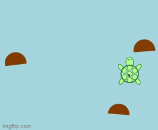

MP2 Write Up
Overview
The goal for this project was to create 6 cohesive sketches that flow together and build off of each other.
I decided to start with a cute turtle in a pond, then appear randomly in the pond, then swim upstream. The next,
interactive piece was to have the turtle follow the mouse around, and I wanted to decorate the area a little more.
My first sound sketch's purpose was just to make the ocean sounds play, and the second sketch is able to play the
ocean sounds when the turtle hovers over the rock. All of the sketches are able to be previewed in their gallery
boxes, and if you click on the title, it will take you to a full page of the sketch. A gif of the interactive turtle
is below.

Development
My first step in development was to get familiar with the p5.js vocabulary and how to draw simple shapes. The easiest
part was the circle pond and the circle shape of the shell. The hexagons only took a bit to find out, the most time
consuming part was trial and error for each position of the hexagons. I also had to figure out how to use the rotate
function to make each of the arms and had to deal with p5.js turning all of the positions into radial. For the next sketch,
I was able to use the random function to make a random translation that the rest of the turtle sketch followed. I had to
go into all of the hard-coded transitions and code them instead to the window size and the random center that I created.
The hardest sketch to code was the swimming turtle. With the rotate funtion, all of my arms were going in an "X" formation
(gif below).
At first I was attempting to make all of the pieces move seperately. Using translate +1 before all of the draw
functions made the turtle move across the screen, but I wanted it to change direction as it went. This will be in the Kudos
section, but thanks to a very helpful change-direction tutorial, I was able to use true, false, and if/else statements to
make the turle swim from side to side and start back from the bottom when it gets to the top.
The last 3 sketches that used interaction were not too difficult. I used the mouseX and mouseY translation to make the turtle
follow the mouse. The hardest part was actually making the arc that were the rocks on the screen. For some reason, it was
very hard to figure out all of the variables of an arc. Then it came time to figuring out the sound part of the assignment.
I downloaded some ocean sounds into my MP2 folder and for some reason my sound was just not playing. Hannah helped my realize
I was just missing a url source at the top to access the p5.js sound library and functions. From there the biggest challenge
was ahead of me: making the sound play on the hover. Thanks to an amazing resource, I was able to decode how to create a hover
and somehow it worked on the first time I ran it ?? I savored the moment because that will probably never happen again, but it
was the most exciting part of this whole assignment.
Issue
The worst issue I came across was trying to fix my hard-coded translations for the swimming turtle. My first approach was to go
piece by piece and transalte it to move across the screen. From there, I had extreme difficulty dealing with the arms that were
rotated a specific way. Through Hannah's help and some online research, I found that translating from the very beginning was the best way
to go, however, that also meant I had to go through each of t=my hard-coded positions (which I needed to do anyways to make the sketch
fit the window size). I was able to get it successfully going straight up, but I also wanted the side to side motion. I knew this had to
do with adding 1 to the X position until it got to a certain point and then subracting 1 until it got to another point. I was able to make
this happen through a "changeDirection" variable that changed from true to false and back if the X position ever hit a certain point. Then, the
turtle was just translated accordingly. Once it reaches the top of the page, the y-value drops back down to the bottom of the page.
Ideas and Future
- Add more features to the landscape
- Make each feature play a different sound when you hover
- Make the turle change the way it faces when it goes a certain direction
Kudos
Shout out to to this site that helped a lot with the changing direction function:
https://editor.p5js.org/cmorgantywls/sketches/HkdbRQnOG
as well as this page https://editor.p5js.org/slow_izzm/sketches/QDJ3v8fxg that helped me with the sound hover.
Also shout out to Hannah for helping me in-person and over the discord as well as Elliana and Prerna who
answered my hourly questions.